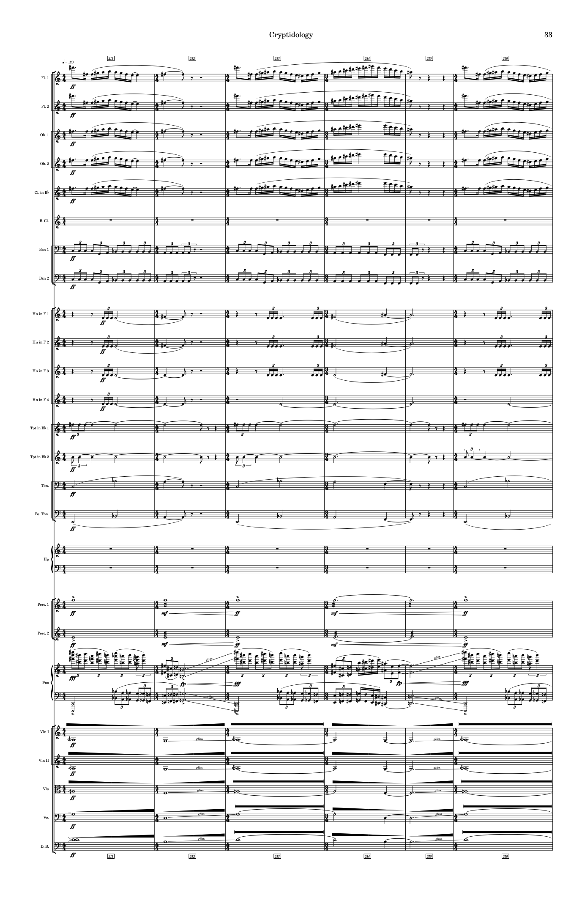
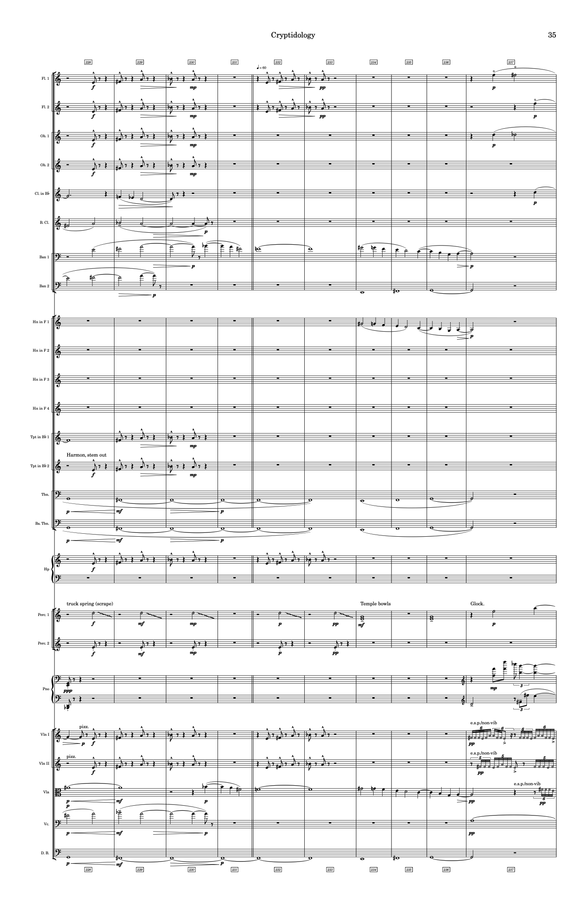
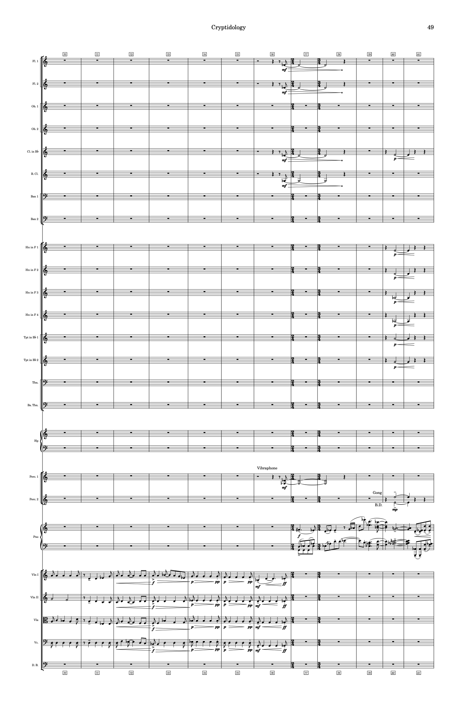

Cryptidology is a work that represents some of the stories and folklore of my native West Virginia.
An exploration in timbre and color built around the Mothman legend — a seven-foot, red-eyed, winged creature said to have appeared during the collapse of the Silver Bridge in Point Pleasant, West Virginia, in 1967. In Appalachian folklore, its appearance is taken as an omen of disaster to come.
Drawn from the story of Elva Zona Heaster Shue, murdered by her husband in 1897. Ruled a natural death until her mother's testimony — that Zona's spirit appeared to her and revealed a broken neck — led to an exhumation that confirmed it. The only known case in U.S. history in which testimony from a spirit helped convict a murderer.


